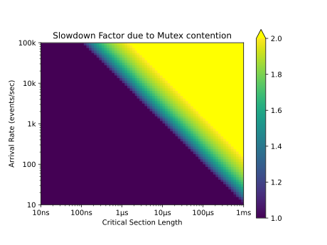

2022-09-30
The Go programming language has two flavours of mutex that can be used to
serialise access to shared state. They are
sync.Mutex and
sync.RWMutex. This blog post explains the
differences between them and quantitatively analyses why RWMutex may not
give performance benefits over Mutex even under read-heavy data access
scenarios.
A mutex is a synchronisation primitive that can be used to help ensure only a
single thread of execution can access a critical section at any one time. A
mutex can be “locked”, and cannot be locked again until it is first “unlocked”
(typically by the process that locked it). A critical section is a piece of
code that reads or modifies state that must be accessed by a single thread of
execution at a time to maintain its invariants. In Go, this is implemented as
the Mutex type.
Go also contains a read/write mutex variant, implemented as the RWMutex
type. It can be held by either a single writer or multiple readers.
Mutex and RWMutex are both advisory locks. This means that it’s up to
the user to ensure that the protected state is only read or modified while the
mutexes are locked. For RWMutex, it’s also up to the user to ensure that the
correct locking mode is used (i.e. that the state is not modified if the lock
is only held in read-mode).
RWMutex might be better in specific circumstancesIn situations where operations read but do not modify state, RWMutex looks as
though it may improve performance over Mutex. If using a regular Mutex,
readers have to wait for others to finish before they get their turn (access is
completely serial). But with an RWMutex, many readers can access the
critical section simultaneously (read access is completely concurrent). If
readers aren’t waiting for each other, then it follows that execution may be
faster.
The amount of performance improvement expected when replacing a Mutex with an
RWMutex should intuitively be higher in the following scenarios:
Long critical sections. This is because other readers will take longer to finish their turn.
Frequent access rate (high events per second). This is because there is a higher chance that the lock will already be held whenever a reader tries to acquire it. Even if the critical section is very short, if there are many readers then any particular reader may have to wait a long time.
High CPU resource availability. Assuming that the critical section is CPU bound, it’s only going to be possible to execute as many readers simultaneously as there are CPUs available.
The effect of “long critical sections” and “highly frequent access rate” need to be quantified in order to be useful. This can be done by simulating various access scenarios using a Monte Carlo simulation.
First, let’s make some assumptions in order to create a simple model:
Assume many readers and no writers. This is a crude approximation for a read-heavy system, such as a web server that only serves static content.
Assume no overhead due to locking/unlocking, and coordination/switching between execution threads. These overheads are small, so this is a reasonable simplification.
Assume readers arrive at random times, independent of each other. This is a reasonable assumption if reads are initiated by user actions and there are many different users.
Assume there are sufficient CPU resources to allow an unbounded number of
readers to execute the critical section in parallel. This is unrealistic but
only stands to benefit the RWMutex.
There are two parts of the model that we can vary during the Monte Carlo simulation:
The overall access rate, in events per second.
The critical section length, as a duration.
The simulation output is the time elapsed between event initiation and event completion. This is the sum of waiting time and the duration of the critical section itself. Many read events will be simulated, so it’s most useful to work with aggregates, such as the 50th (median), 95th, and 99th percentiles.
For an RWMutex, the model is so trivial that there is no need to simulate it.
The total time elapsed is the same as the critical section duration.
This is because of the assumptions made for the model. Readers don’t need to
wait before accessing the critical section, and an unlimited number of readers
can progress simultaneously.
For a Mutex, things are more complicated, because waiting time needs to be
simulated. This is where a Monte Carlo simulation is helpful. The simulation is
implemented in Go, but the code snippets below are annotated so that they’re
accessible to those not familiar with the language.
First, we simulate a large, fixed number of events (say, 10 million).
const totalEvents = 10_000_000
Next, we calculate the total duration of the simulation. Because one of the inputs to the simulation is events per second, this is a simple division:
totalDurationSec := totalEvents / eventsPerSec
The arrival time of each event is then independently chosen such that events are evenly distributed throughout the length of the simulation:
eventStarts := make([]float64, totalEvents)
for i := range eventStarts {
// rand.Float64() is between 0 and 1
eventStarts[i] = rand.Float64() * totalDurationSec
}
sort.Float64s(eventStarts)
The waiting time for each read event can then be simulated, by keeping track of when the critical section is next unlocked.
var blockedUntil float64
eventDurations := make([]float64, len(eventStarts))
for i, start := range eventStarts {
if blockedUntil <= start {
// The event is unblocked so can run straight away.
blockedUntil = start + crititalSectionLengthSec
} else {
// The event is blocked, so can't run immediately.
blockedUntil += crititalSectionLengthSec
}
eventDuration := blockedUntil - start
eventDurations[i] = eventDuration
}
After the simulation has completed, percentiles on the distribution of read event durations can be calculated (code omitted due to being obvious and uninteresting).
The unabridged code listing is below:
main.gopackage main
import (
"encoding/json"
"flag"
"math/rand"
"os"
"sort"
"time"
"golang.org/x/exp/slices"
)
func main() {
criticalSectionLength := flag.Duration(
"critical-section-length",
500*time.Microsecond,
"length of the simulated critical section length")
eventsPerSec := flag.Int(
"events-per-second",
1_000,
"number of requests to access the critical section per second")
flag.Parse()
Simulate(criticalSectionLength.Seconds(), float64(*eventsPerSec))
}
func Simulate(crititalSectionLengthSec float64, eventsPerSec float64) {
const totalEvents = 10_000_000
totalDurationSec := totalEvents / eventsPerSec
eventStarts := make([]float64, totalEvents)
for i := range eventStarts {
eventStarts[i] = rand.Float64() * totalDurationSec
}
sort.Float64s(eventStarts)
var blockedUntil float64
eventDurations := make([]float64, len(eventStarts))
for i, start := range eventStarts {
if blockedUntil <= start {
// The event is unblocked so can run straight away.
blockedUntil = start + crititalSectionLengthSec
} else {
// The event is blocked, so can't run immediately.
blockedUntil += crititalSectionLengthSec
}
eventDuration := blockedUntil - start
eventDurations[i] = eventDuration
}
dist := distribution(eventDurations)
output := map[string]any{
"crit": crititalSectionLengthSec,
"eps": eventsPerSec,
"p50": dist.p50 / crititalSectionLengthSec,
"p95": dist.p95 / crititalSectionLengthSec,
"p99": dist.p99 / crititalSectionLengthSec,
"avg": mean(eventDurations) / crititalSectionLengthSec,
}
json.NewEncoder(os.Stdout).Encode(output)
}
type percentiles struct {
p50 float64
p95 float64
p99 float64
}
func distribution(durations []float64) percentiles {
slices.Sort(durations)
n := len(durations)
return percentiles{
p50: durations[n*50/100],
p95: durations[n*95/100],
p99: durations[n*99/100],
}
}
func mean(durations []float64) float64 {
var sum float64
for _, d := range durations {
sum += d
}
n := float64(len(durations))
return sum / n
}
The graph below shows the result of the Monte Carlo simulation for various
scenarios. The colours in the graph show the theoretical slowdown of RWMutex
compared to Mutex, from 1.0 (no slowdown) up to 2.0 (twice as slow) at the
99th percentile of the distribution.

The graph confirms that mutex contention is highest (and therefore RWMutex is
most useful!) when the arrival rate is high or the critical section has a long
duration.
The graph shows something else interesting. The transition from “no contention” to “high contention” follows a straight line. If some values at the transition are taken and their product calculated, it’s clear that the product is always a constant.
| Arrival Rate | Critical Section Length | Product |
|---|---|---|
| 100k events/sec | 10ns | 0.01 |
| 10k events/sec | 1us | 0.01 |
| 1k events/sec | 10us | 0.01 |
| 100 events/sec | 100us | 0.01 |
| 10 events/sec | 1ms | 0.01 |
Note that the units of arrival rate (events per time) and critical section (time per event) cancel out, so the product is unitless. Let’s call the product the contention factor.
The 99th percentile is used for the graph, so we can conservatively say that
RWMutex only starts to have a theoretical performance improvement over
Mutex once the contention factor above (0.01) is reached.
Furthermore, one of the assumptions made was that there are sufficient CPUs
available to execute many simultaneous readers. In particular, if there is only
1 CPU available, then RWMutex is never going to give a performance
improvement.
Here are some example scenarios of what this means:
A single instance of a web service is serving requests at a modest rate of
100 requests per second. As part of serving each request, it performs a
single map lookup, protected by a mutex because the map is occasionally
updated. Because a map lookup takes somewhere between 10ns and 100ns, the
contention factor is between 0.000001 (100 ⋅ 10 ⋅ 10-9) and
0.00001 (100 ⋅ 100 ⋅ 10-9). Because this is well below 0.01, an
RWMutex will not provide any benefit over a Mutex.
Performing an aggregation operation on a large dataset may take 1ms (for
example, calculating a histogram for 100,000 records). If that is needed to
be done 100 times per second, the contention factor is 0.1 (100 ⋅
10-3). Because this is above 0.01, an RWMutex could
theoretically be expected to provide some benefit over a Mutex.
Since RWMutex has the potential to provide a performance improvement, why
not use it by default, and forget about doing a back of the envelope contention
factor calculation?
This is tempting, but I think there are some good reasons to prefer Mutex:
When using RWMutex, it’s important to use consistent locking modes
(read-only vs read-write) for each critical section. This seems trivial to
get right, but I’ve seen outages on multiple occasions due to bugs relating
to mismatched locking modes.
Because locks in Go are advisory, it’s up to the programmer to make sure
RWMutexs are held in the correct mode for what each critical section does.
If state is modified while holding the mutex in read-only mode, the program
will run but will be buggy. Again, this seems trivial to get right, but in
practice, I’ve seen things go wrong here. The way I’ve seen this play out is
that RWMutex is used correctly when code is first written, but then a
write operation is added in the critical section later without changing the
locking mode.
RWMutex is non-recursive. This means that a critical section should not
acquire the lock in read-only mode a second time, even if the lock would be
released the correct number of times by the end of the critical section. If
an RWMutex is used in this way, a deadlock will occur when another
goroutine concurrently attempts to acquire the RWMutex in read-write
mode. This is explicitly stated in RWMutex’s documentation, but of course,
not everyone reads the documentation. Bugs related to recursive usage of
RMutex are particularly pernicious because they’re difficult to catch in
unit tests and may exist in production code for a very long time before
causing problems.
My advice is to default to using a Mutex to lock critical sections. If you
suspect there may be contention that an RWMutex could help alleviate,
calculate the contention factor to confirm. If it’s 0.01 or higher, use an
RWMutex with the appropriate level of caution.